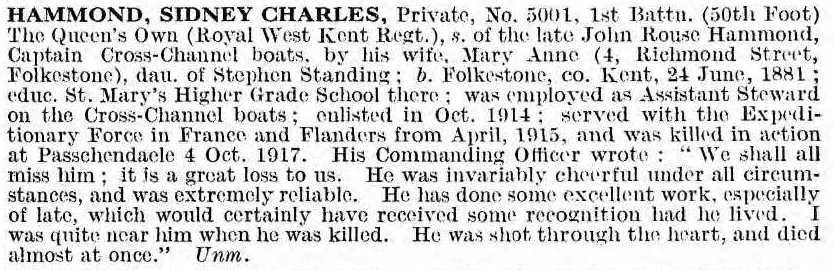
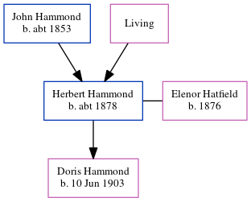

Sidney Charles Hammond 1881 - 1917
[ Home ] | [ Calendar ] | [ Surnames Index ] | [ Errors ] | [ Family History ]A marine steward and the child of John Hammond and Mary Standing (a lodge house keeper), Sidney Hammond, the third cousin twice-removed on the father's side of Nigel Horne, was born in Folkestone, Kent, England on 24 Jun 18811,2,3,4,5,6.
During his life, he was living at 4 Richmond Street in Folkestone on 5 Apr 189112 - less than a mile from his sister Jessie Elizabeth who was living at 4 Richmond Street in Folkestone and on 31 Mar 190113. During 1917, he was serving in the army in Western European Theatre (regiment: Queen's Own (Royal West Kent Regiment); Rank: Private; Service number: G/5001).
He died on 4 Oct 1917 in Passchendaele, Belgium5,6,7,8,9,10,11 and was buried at Zonnebeke, Ypres, West Flanders, Belgium after 4 Oct 19178.
Parents
- John Rouse was born c. 1853
- Mary Ann
Citations
- 1901 England Census Online publication - Provo, UT, USA: The Generations Network, Inc., 2005.Original data - Census Returns of England and Wales, 1901. Kew, Surrey, England: The National Archives of the UK (TNA): Public Record Office (PRO), 1901. Data imaged from the National
- British Army Service Records - Findmypast
- British Army, De Ruvigny's Roll Of Honour 1914-1918 - Findmypast
- England & Wales, FreeBMD Birth Index, 1837-1915 Online publication - Provo, UT, USA: The Generations Network, Inc., 2006.Original data - General Register Office. England and Wales Civil Registration Indexes. London, England: General Register Office. © Crown copyright. Published by permission of the Cont
- UK, De Ruvigny's Roll of Honour, 1914-1919 Ancestry.com Operations, Inc.
- UK, Soldiers Died in the Great War, 1914-1919 Online publication - Provo, UT, USA: Ancestry.com Operations Inc, 2008.Original data - British and Irish Military Databases. The Naval and Military Press Ltd.Original data: British and Irish Military Databases. The Naval and Military PressLtd.
- Commonwealth War Graves Commission Debt Of Honour - Findmypast
- Global, Find A Grave Index for Non-Burials, Burials at Sea, and other Select Burial Locations, 1300s-Current Ancestry.com Operations, Inc.
- Lives Of The First World War 1914-1918 - Findmypast
- Soldiers Died In The Great War 1914-1919 - Findmypast
- UK, Army Registers of Soldiers' Effects, 1901-1929 Ancestry.com Operations, Inc.
- 1891 England, Wales & Scotland Census - Findmypast (was age 9 and the son of the head of the household)
- 1901 England, Wales & Scotland Census - Findmypast (was age 19 and the son of the head of the household)
Media
Sidney Hammond - Soldiers Effects

Sidney Hammond - Roll of Honour

England & Wales births 1837-2006 - BMD/B/1881/3/AZ/000235/116
1891 England, Wales & Scotland Census - GBC/1891/0005997896
British Army, De Ruvigny's Roll of Honour 1914-1918 Transcription - GBM-DR2-009379
British Army Service Records 1914-1920 Transcription - GBM-WO363-4-7307011-10-239
Soldiers died in the Great War 1914-1919 Transcription - GBM-WWISD-0342335
1901 England, Wales & Scotland Census Transcription - GBC-1901-0005553042
Lives of the First World War 1914-1918 - GBM/LIVES/1772298
Commonwealth War Graves Commission Debt Of Honour - GBM/CWGC/ROLLOFHONOUR/000401229
Family Tree
Map
Generated by ged2site. Last updated on Jul 3, 2024
Known Issues
Country not included in country, or misspelt country 'Western European Theatre'
Adding date of burial as 'aft 4 Oct 1917'
Location for "military service" on Oct 1914 is empty